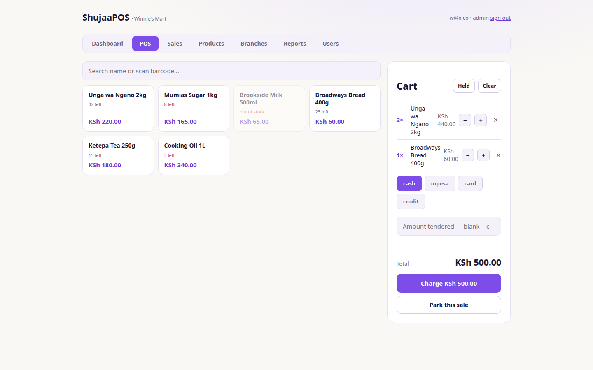

Barcodes Aren't Just for Supermarkets
ShujaaPOS · November 2026 · 6 min read
Watch a till at a busy supermarket: beep, beep, beep — three items rung up in four seconds. Now watch a duka at 7pm: the cashier scrolls a list, taps a product, double-checks the price, moves on. Same job, very different speed — and the difference is a strip of black lines printed on almost everything you already sell.
Barcodes feel like big-shop territory, but nearly every packaged product in Kenya already has one. You don't need to print anything. You need a till that can read them.
What a barcode actually does
A barcode is just a number written in lines — usually 8 or 13 digits. "6001234" might be a 2kg packet of unga. When the till reads it, it looks up that number in your product list and pulls the right item and price. No scrolling, no mis-taps, no "was it the 500ml or the 1 litre?"
That lookup is the whole magic — and it matters most exactly when your shop is busiest:
- Speed: scanning is faster than finding a tile in a 200-product grid, every time.
- Accuracy: look-alike products (sugar 1kg vs 2kg, milk flavours) can't be confused by a hasty tap.
- New staff: day-one cashiers can sell correctly without memorising your catalogue.
How to barcode your shop in an afternoon

In ShujaaPOS the search box doubles as the barcode reader: type or scan a code and press Enter — the matching product drops straight into the cart.
- Start with your top 50 sellers. The 80/20 rule applies hard here — most shops sell a small share of their products most of the time. Barcode those first.
- Record each product's barcode once. Scan it or type the number under the lines into the product's barcode field. It's a one-time job per product.
- For unbranded stock, make your own codes. Loose sugar, repackaged rice, your own mandazi — invent short codes (e.g. "SUG500") and keep a printed cheat sheet at the till.
- Keep the fallback. Search by name still works — barcodes are a fast lane, not the only lane.
Do you need a scanner?
No. A scanner is nice — a basic USB one costs roughly what a good calculator does and works like a keyboard — but plenty of shops run barcode selling with just the number under the lines typed in, or the phone camera where the till supports it. The point is the system, not the gadget.
Common mistakes
- Same barcode, different products. If two items share a code (happens with repacks), the till can't tell them apart. Give repacks their own codes.
- Barcodes without prices. The scan finds the product — your price list still decides what it costs. Keep prices current.
- Scanning then ignoring. If the till says "Cooking Oil 1L" and the customer handed you 2L, trust your eyes, not the barcode.
The takeaway
Barcodes turn checkout from search-and-tap into scan-and-done. One afternoon of recording codes on your top sellers, and every sale after that is a couple of seconds faster — which, across a Saturday, is real money and a shorter queue.
ShujaaPOS searches by name or barcode — scan, press Enter, sell.
Try it in your browser